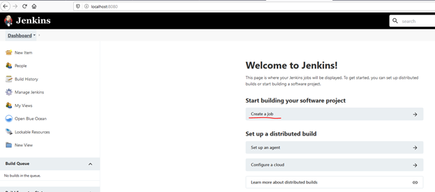
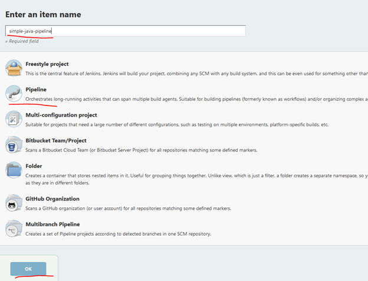
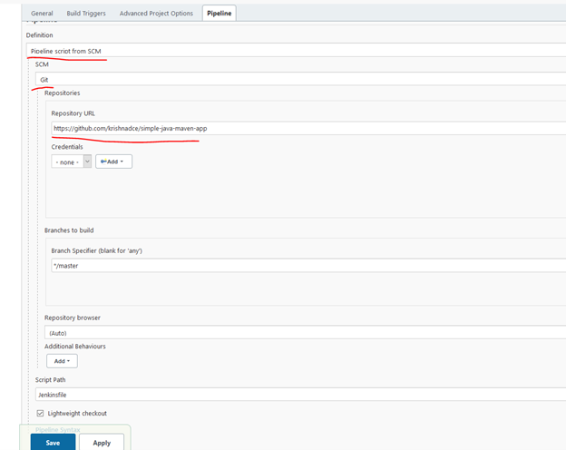
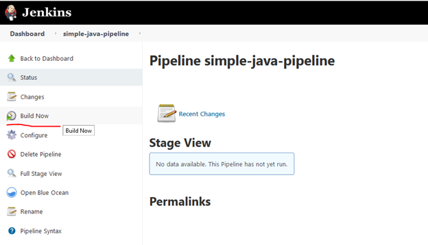
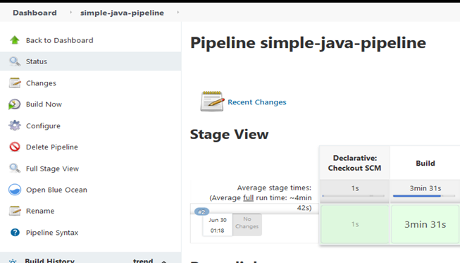
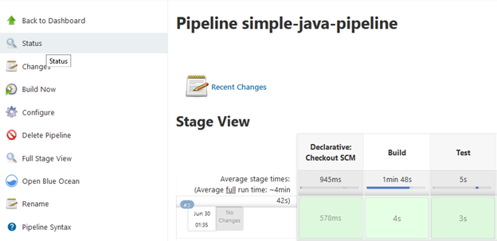

CI/CD 管線實作
基於 Jenkins 的 CI/CD 管線
Jenkins 是一個開源的持續整合伺服器，用於協調 CI/CD 管線。它支援整合多種元件、基礎架構如 git、雲端等，有助於完整的軟體開發生命週期。
在此實作實驗中，我們將： * 為一個簡單的 Java 應用程式建立建置管線 (CI)。 * 將測試階段加入建置管線。
這個實作是基於在本地工作站的 Docker 上執行 Jenkins，設計於 Windows 作業系統。若為 Linux 作業系統，請參考 demo。
注意： 此實作實驗設計為在 Docker 上執行 Jenkins，步驟亦適用於直接在 Windows 工作站安裝的 Docker。
安裝 Git、Docker 與 Jenkins：
- 在你的工作站安裝 git 指令列工具。（請遵循 此處 以於本機安裝 Git）
- 在 Windows 工作站安裝 Docker Desktop，依照 此處說明 安裝 Docker。
- 確保你的 Docker for Windows 設定為執行 Linux Container，而非 Windows Container。請參考 Docker 文件切換至 Linux container 的指示。
- 參考此處 Jenkins 在 docker 上的安裝設定。
- 透過設定精靈進行 Jenkins 初始設定，如建立管理者帳號等。
- 若直接在本機安裝 Jenkins，請確定已安裝 maven 工具。請參閱 此處 進行安裝。
Fork 範例 Java 應用程式：
本實作中，我們將從 GitHub 上的 simple-java-maven-app fork 一個簡單的 Java 應用程式。 1. 註冊 GitHub 帳號 加入 GitHub · GitHub。完成後，請登入 登入 GitHub。 2. 打開 simple-java-maven-app 專案，點擊此 連結。 3. 在右上角點擊「Fork」，將專案複製到你的 GitHub 帳號中。（參考 Fork A Repo） 4. Fork 完成後，將該倉庫 clone 到本地工作站。
建立 Jenkins 專案：
- 使用先前建立的管理員帳號登入 Jenkins 頁面 http://localhost:8080。
- 首次登入時會看到如下畫面，點選「建立一個 Job」。

圖 4：Jenkins - 建立 Job
- 在下一畫面中，於 輸入項目名稱 欄位輸入 simple-java-pipeline，並從項目類型列表中選擇 Pipeline，然後點選 OK。

圖 5：Jenkins - 建立 Pipeline
- 點選頁面頂端的 Pipeline 標籤，往下捲動至 Pipeline 區段。
- 於 Definition 欄位選擇 Pipeline script from SCM，此選項表示 Jenkins 將從原始碼管理 (SCM) 取得 Pipeline 腳本，此處為你本機 clone 的 Git 倉庫。
- 於 SCM 欄位選擇 Git。
- 在 Repository URL 欄位中輸入你先前 Fork 範例 Java 應用程式 區段中所 clone 至本機的專案目錄路徑。
畫面如下所示：

圖 6：Jenkins - Pipeline 設定
用 Jenkinsfile 建立建置管線：
Jenkinsfile 是一個包含管線設定與階段等指令的腳本檔案，可讓 Jenkins 從該檔案建立管線。此檔案會儲存在程式碼倉庫的根目錄。 1. 使用你偏好的文字編輯器或 IDE，在本機 simple-java-maven-app Git 倉庫根目錄建立並儲存名為 Jenkinsfile 的新檔案。 2. 將以下敘述式管線代碼複製並貼入空白的 Jenkinsfile 中。
pipeline {
agent {
docker {
image 'maven:3.8.1-adoptopenjdk-11'
args '-v /root/.m2:/root/.m2'
}
}
stages {
stage('Build') {
steps {
sh 'mvn -B -DskipTests clean package'
}
}
}
}
注意： 若你在本機工作站直接執行 Jenkins（非 Docker 方式），請將 agent 改為 any，以於本機執行。請確認本機已安裝 maven 工具。
pipeline {
agent any
stages {
stage('Build') {
steps {
sh 'mvn -B -DskipTests clean package'
}
}
}
}
在上述 Jenkinsfile 中： * 指定了 agent，表示管線在哪裡執行。agent 的 docker 部分表示在指定的 docker 映像中啟動新 container 來執行。 * 在 stages 區域可定義多個階段。此處有一個階段為 ‘Build’，裡面執行 Maven 建置 Java 應用程式的指令。
- 儲存 Jenkinsfile 之後，提交並推送至 fork 過的倉庫。於命令提示字元執行：
cd <你的 simple-java-maven-app 本機 clone 目錄>
git add .
git commit -m "Add initial Jenkinsfile"
git push origin master
- 於瀏覽器開啟 Jenkins 入口網站並點選 Dashboard，開啟 simple-java-pipeline，在左側選單點擊 立即建置（Build Now）。

圖 7：Jenkins - 建置管線中
- 於 建置歷史（Build History） 中可以看到正在建置的紀錄，點選對應的建置編號可查看各建置階段。

圖 8：Jenkins - 檢視執行中建置
- 成功建立並執行包含單一階段的建置管線。可點選 Console Output 查看詳細執行日誌。
在建置管線中加入額外階段：
前一節建立的管線只有單一階段，一般 CI 管線會包含多個階段如建置、測試與其他選用階段（如程式碼掃描等）。本節將在建置管線中加入測試階段並執行。
- 回到文本編輯器/IDE 開啟 Jenkinsfile，新增如下的 Test 階段：
stage('Test') {
steps {
sh 'mvn test'
}
post {
always {
junit 'target/surefire-reports/*.xml'
}
}
}
新增 Test 階段後的 Jenkinsfile 範例如下：
pipeline {
agent {
docker {
image 'maven:3.8.1-adoptopenjdk-11'
args '-v /root/.m2:/root/.m2'
}
}
stages {
stage('Build') {
steps {
sh 'mvn -B -DskipTests clean package'
}
}
stage('Test') {
steps {
sh 'mvn test'
}
post {
always {
junit 'target/surefire-reports/*.xml'
}
}
}
}
}
- 此處新增了名為 ‘Test’ 的階段，執行 Maven 測試指令。
- post -> always 區段保證該步驟在執行完前面的指令後一定會被執行，其將測試報告透過 Jenkins 介面提供。
注意： 若你在本機直接執行 Jenkins（非 Docker），請將 agent 改為 any，確保本機已安裝 maven。
pipeline {
agent any
stages {…
}
}
- 儲存 Jenkinsfile，提交並推送至 fork 倉庫，在命令提示字元執行：
cd <你的 simple-java-maven-app 本機 clone 目錄>
git add .
git commit -m "Test stage is added to Jenkinsfile"
git push origin master
- 瀏覽器中前往 Jenkins 入口網站點選 Dashboard，開啟 simple-java-pipeline，左側選單按下「立即建置」。
- 可在建置頁面中看到建置與測試兩階段皆被執行。

圖 9：Jenkins - 建置中顯示含測試階段
我們現已成功建立包含兩個階段——建置與測試的 CI 管線。